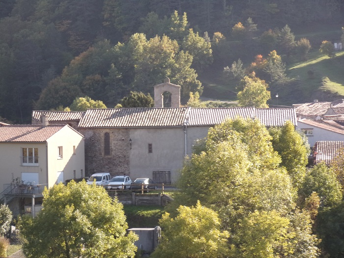

L'église de Sainte Marie de Courondes dépendait de l'abbaye de Saint Martin de Lenis
Elle devrait se trouver sur la commune de Cailla, proche du Rébenty
A ce jour je n'ai pas su encore localisé précisément ce lieu.
Ce qu'en dit Jean Lautier :
Courondes: "Notre dame de Corondes"
Cette paroisse était perchée au sommet d'une colline entre les villages de Cailla et Marsa : sa localisation, au sommet d'une butte sur la rive gauche du Rébenty, est problématique compte tenu de la faible densité des ruines. Il serait encore plus aléatoire de vouloir préciser sur ces fragments épars l'emplacement de l'église
Mes demandes à la mairie de Cailla n'ont pas encore abouti, je n'ai pour l'instant pas encore étudié précisément le cadastre de Cailla de 1833 pour voir si je saurais en tirer quelque chose
L'indice le plus exploitable dont je dispose aujourd'hui est la carte de Cassini

Carte de Cassini - centrée sur Courondes - https://www.geoportail.gouv.fr/carte.
La carte du diocèce d'Alet de 1781 (voir la page sur l'abbaye de St Martin) donne la même information (même si met aussi un autre Courondes à la place de l'abbaye de St Martin...)
De ces cartes, il serait possible de déduire que Courondes se trouverait à droite d'un ruisseau se jetant dans le Rébenty, en proximité de la rivière et du village de Cailla (qui aurait originellement été peuplé avec des ex-habitants de Courondes, d'après le facebook de cette commune).

Cette dernière carte montre aussi 2 cours d'eau encadrant Cailla
Lundi 25 octobre, me basant sur les cartes de Casini et IGN, j'avais décidé de partir à la recherche de ce lieu aujourd'hui disparu.
Je n'ai même pas su trouver un seul mur de pierre, mais ce fut une bien bonne aventure...

Premier ruisseau rencontré après l'embranchement de Cailla sur la route longeant le Rébenty
L'emplacement pour me garer étant après le pont sur le petit ruisseau, le Rébenty est alors à Gauche de la route et le ruisseau vient bien sur la rive droite du Rébenty

Un sentier longe le ruisseau sur quelques mètres jusqu'à un poste de chasse. Ce chemin a dû être plus large, mais semble aujourd'hui peu entrenu
Un sentier semble monter. Est-ce un mur de pierre soutenant le chemin qu'on voit là, à droite (si lors de ma montée je n'avais aucun doute, après la suite du périple je ne suis plus aussi sûr...

Un sentier monte toujours avec une pente qui me semble justifier l'existance d'un chemin... ?
Est ce un escalier ? Comme dit précédemment, initialement je n'avais quasiment pas de doute sur l'existence d'un chemin aménagé à flanc de colline, mais la suite m'a laissé plus perplexe...
De l'autre coté du ruisseau une étrange montagne en forme de pyramide a des strates de pierre à peine plus pentue que mon chemin me semble-t-il... Mais pas d'aménagement humain visible

Toujours en grimpant mais en restant au plus près du Rébenty, le sentier ne grimpe plus mais longe un espèce de mur rocheux naturel qu'on aperçoit derrière de petits arbres
Je quitte alors le sentier pour passer au dessus du "mur" rocheux,
persuadé (à tort) de touver là, un plateau avec l'ancien village de Courondes
La Montée a été rapide, je n'ai pas du prendre plus d'un quart d'heure pour arriver à ce point, et cela malgré mes hésitations sur différents sentiers montants (tracés par les sangliers ?)
En fait, de plateau, je me trouve sur un ligne de crête avec vue sur le village de Cailla que je pensais naïvement beaucoup plus loin...

La grande ferme de Cailla

Le village de Cailla
Gros plan sur l'église de Cailla

La montagne pyramide, signalée plus haut comme de l'autre coté du ruisseau, s'avère entourée de Champs : est-ce elle qui accueillait le village de Courondes en son temps ?

Vue vers Puilaurens

Vue vers Axat
Gros plan vers la vallée du Rébenty qui se poursuit en remontant le cours de l'Aliès vers le col du Campérier, Puilaurens et la Serre de la Quières
Sur une trentaine de mètre de profondeur, rien ne pousse à part quelques rares touffes d'herbes, puis commencent les prés qui vont jusqu'au village de Cailla. Pas de trace de mur comme si cette zones n'avait jamais été propice à la culture, même pas à la vigne.
Pour le retour il me semble alors plus facile de suivre le bord du pré qui semble déscendre jusqu'au ruisseau en contre bas. Quelle erreur...
A noter que l'une de mes chaussures commence à présenter des signes de faibles : la semelle de mon pied droit commence à se décoller grave, (et la geine qui me fait boiter de ce pied depuis un mois s'intensifie) : choisir un chemin évidemment plus facile qu'à l'allée est de toute logique...

Dernières vues de Cailla avant de déscendre dans la gorges qui borde le ruisseau


Quelques vues du ruisseau, qui parfois à de l'eau ruisselantes, par fois simplement présentant des poche d'eau, parfois à sec
Ces photos rendent peu l'impression d'enferment que j'ai ressenti au fond de cette gorges, et de beauté sauvage aussi. La seule information qui en ressort est le peu de luminosité
Et comme passer d'un trou d'eau à un autre a fini par me voir glisser au fond d'un de ceux ci : en plus d'avoir une chaussure qui me lachait, je me suis retrouvé avec le pantalon trempé jusqu'au dessus des genoux
Le nombre de photos a au moins l'avantage de monter que le chemin du retour vers la route du Rébenty s'est révélé beaucoup plus long que prévues. Malheureuseement elles ne montrent pas la complexité de ce chemin de croix? A deux reprises j'ai été obligé de quitter le cours d'eau pour monter sur la paroi la plus facile de la gorges : je me trouvais alors arrivé à une chutte trop profonde pour que je puisse passer, la première de 2 mètres environs, mais la deuxième devait en faire plus de 6 : quand le ruisseau est en eau la vue doit en être remarquable.
Suivre le cours d'eau n'est pas dénué de danger non plus. J'ai eu la surprise en me retournant pour prendre une photo de m'apercevoir que j'étais passé sous un fil de fer barbelé, après vérification si je n'avais pas regardé mes pieds en passant dessous j'aurais pu m'y accrocher

Contournement de la grande chute par la rive gauche, coté de la colline en forme de pyramide
c'est à ce moment là que la semelle m'a définitivement lachée...

Les arbres morts formant une croix, symbole de la fin de mon calvaire

L'arrivée à la route, pont sur le ruisseau
Il m'a bien fallu plus d'une heure de "déscente" pour enfin retrouver la voiture. Cela me paraissait à ce point tellement long que je commençais à m'inquiéter de devoir continuer de marcher de nuit...
Je n'ai toujours pas compris, alors que j'avais l'impression
de suivre des chemins parallèles à l'allée comme au retour et
d'avoir beaucoup descendu en suivant le bord du champ de cailla,
comment j'ai pu finalement avoir encore à descendre autant le ruisseau pour me retrouver à la route...
Aucune trace de Courondes lors de ce périple.
Ai-je suffisament cherché au niveu de la crête ou faut-il que je cherche un autre ruisseau, plus loin ?
Ce sera surement le sujet d'une prochaine aventure...